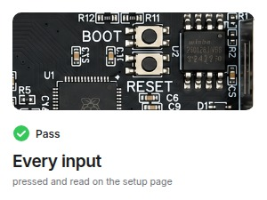
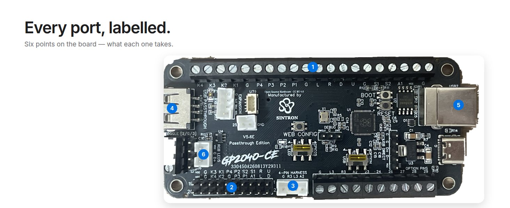
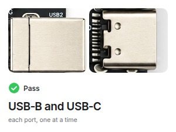
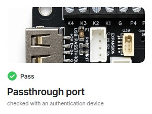
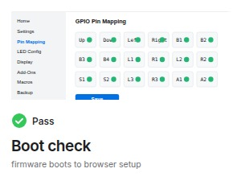

Every input
Every input on the board is pressed and read on the setup page — not a sample of them, and not a sample of boards.

Any bare wire lands here — buttons with 4.8 mm American or 2.8 mm Japanese terminals both carry over. Strip, insert, tighten. G positions along the row.
Standard 20-pin harness position and pinout, so a loom built for that layout plugs straight in.
One plug covers the three extra buttons. A2 is the touchpad button on PS4 and capture on Switch.
An authentication dongle or a licensed PS4 arcade stick goes here for PS4, PS5 and Xbox. Sold separately — a DualShock or DualSense will not authenticate.
Two device ports so the board fits panel-mount USB-B or a modern USB-C build. Use one at a time.
3-pin JST for WS2812B / SK6812 RGB LEDs, and the I2C expansion port for a 128x64 OLED.

Every input on the board is pressed and read on the setup page — not a sample of them, and not a sample of boards.

Both device ports are checked, one at a time, so the port your build uses is the one we tested.

Checked with an authentication device in place, because that is how PS4, PS5 and Xbox builds will use it.

The board is booted into the browser setup page before it is packed — the same page you will use to map your buttons.
| Board | RP2040 Advanced Breakout Board, USB passthrough edition, revision V5.6E |
|---|---|
| Dimensions | 96.3 x 45.31 mm, 4 mounting holes, industry-standard fight-board footprint |
| Inputs | 18 — 15 signals on the screw terminals plus A2, L3 and R3 on the 4-pin JST |
| Wiring | Screw terminals accept bare wire from 4.8 mm American or 2.8 mm Japanese button terminals; G positions along the row |
| Screw terminals | 20-position, 3.81 mm pitch; plus 10 optional pins and 3 toggle terminals, also 3.81 mm |
| Header | 2x10, 2.54 mm — standard 20-pin harness position and pinout |
| Buttons on board | WEB CONFIG, BOOT and RESET |
| Expansion | I2C JST 2.0 for a 128x64 OLED (SSD1306 / SH1106 / SH1107) |
| RGB | 3-pin JST 2.0, WS2812B / SK6812 |
|---|---|
| USB | USB-B and USB-C device ports (use one at a time); USB-A passthrough port |
| Switches | USB / OPTION; LED / GPIO25 |
| Input modes | XInput, PS3/DInput, PS4, PS5, Xbox One, Switch, Keyboard, Original Xbox, mini-console; mode saved across power cycles |
| Profiles | 6 button-map profiles, named, switched by hotkey or on the setup page |
| SOCD cleaning | Up priority, Neutral, Last win, First win, Off (Off in XInput only) |
| Latency | Under 1 ms at 1000 Hz USB polling (0.76 ms XInput / 0.91 ms PS5, firmware-project measurement) |
| Firmware | Open-source, pre-flashed with the current stable release; update by USB drag-and-drop; settings backup and restore |
Can your control board do this?
Everything on this list is on this board.
An authentication device answers the console's controller check. For PS4 and PS5 that is an authentication dongle or converter, or a licensed PS4 arcade stick or wheel; a DualShock 4 or DualSense does not work. For Xbox One and Series X|S it is an Xbox authentication dongle. All are sold separately, and SINTRON does not supply console keys of any kind. Without one, a PS4 stops the controller after 8 minutes; PS5 works in PS5 mode with titles that support legacy controllers. PC, Raspberry Pi / RetroPie, PS3, Nintendo Switch, Steam Deck, MiSTer and Android need nothing extra.
PS5 add-on boards made for other fight boards do not attach to this board — the passthrough port is how this design handles authentication.
Wiring: G positions are spread along the 20-position screw-terminal row. Buttons share ground, so daisy-chain the ground leads or land several in one terminal. The USB-B and USB-C ports are two ways into the same device connection: use one at a time. The USB / OPTION switch decides whether the passthrough port or optional pins 1 and 2 are active — not both. The LED / GPIO25 switch decides whether the on-board LED is controlled from the setup page or that pin is freed up for your own use.
Firmware: the board ships pre-flashed with the current stable release of the open-source firmware it runs. You can update it yourself later — hold BOOTSEL while plugging in USB and copy the .uf2 for this board onto the drive that appears — and your settings can be backed up and restored from the setup page. The firmware is an open-source project that keeps improving; its documentation and community are the right place for firmware questions. Hardware questions and replacements come to SINTRON.
Made by SINTRON — our name is on the silkscreen. Board only: bring a USB-B or USB-C cable and your own button wires; setup takes three steps in your browser (see the images). Based on the RP2040 Advanced Breakout Board, USB Passthrough Edition, from the GP2040-CE project (copyright 2024 TheTrain), licensed under CC BY 4.0. Changes from the original design: manufactured by SINTRON with SINTRON silkscreen. The full attribution with links is available from SINTRON on request.
SINTRON's RP2040 fight board is the open-source RP2040 Advanced Breakout Board, USB passthrough edition (V5.6E), bench-tested by SINTRON and shipped with the current stable open-source firmware installed. Replacing a generic USB encoder in a cabinet or a stick? Your panel carries over: 20-position 3.81 mm screw terminals take any bare wire — 4.8 mm American and 2.8 mm Japanese buttons alike — the 2x10 header takes a standard 20-pin harness, and the 4-pin JST covers A2, L3 and R3. The 96.3 x 45.31 mm industry-standard footprint with 4 mounting holes drops into existing cases. On the board: 10 optional pins, 3 toggle terminals for a stick-mode switch, an I2C expansion port for an OLED, and a 3-pin RGB port (WS2812B / SK6812). It runs as XInput on PC with no drivers to install, and keyboard mode covers MAME cabinets; PS3, Nintendo Switch, Steam Deck, MiSTer, Android and Raspberry Pi / RetroPie need nothing extra. PS4, PS5 (titles with legacy-controller support) and Xbox One / Series X|S need an authentication device in the USB-A passthrough port, sold separately: an authentication dongle or converter, or a licensed PS4 arcade stick — a DualShock 4 or DualSense does not work. Without one a PS4 stops the controller after 8 minutes. Mini-console modes: Genesis / Mega Drive Mini, NEOGEO Mini, PC Engine Mini, EGRET II Mini, ASTROCITY Mini, PlayStation Classic. Setup is in your browser: hold S2 or the WEB CONFIG button while plugging in USB, open the setup page and press each button when it asks. SOCD cleaning (up priority, neutral, last win, first win, off), turbo, macros, 6 profiles, per-button RGB, OLED and backup/restore are firmware features, and your input mode is saved on the board, so a two-player cabinet can give each side its own layout. Input latency under 1 ms at 1000 Hz USB polling (firmware-project measurement). Board only; bring a USB-B or USB-C cable. Open-source hardware: based on the RP2040 Advanced Breakout Board from the GP2040-CE project, CC BY 4.0.